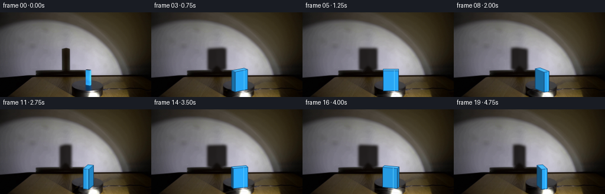
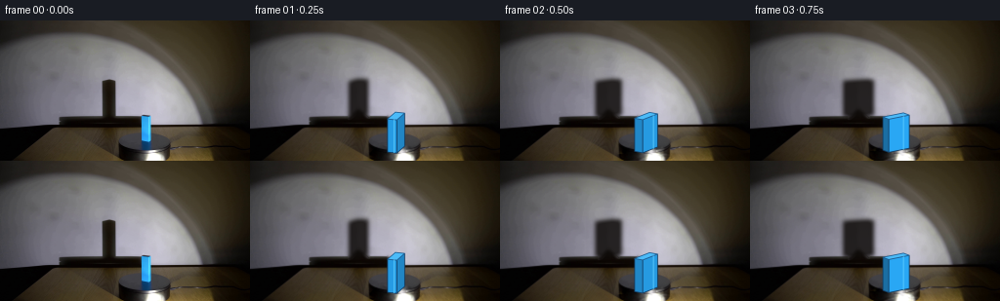

CODING AGENTS AS PIXEL WORLD MODELS
traex/GPT-5.6-Sol · 0074
点击播放 · 原生 RGB 像素
逐轮保存的候选
回放视频、检查图与代码变化。
每份候选均可单独播放。实际图片检查记录在下方工具轨迹中。
候选 01播放与检查图
点击播放 · 原生 RGB 像素


展开代码变化
--- 上一保存版本
+++ 本次保存版本
@@ -0,0 +1,165 @@
+from pathlib import Path
+import math
+import cv2
+import numpy as np
+from PIL import Image
+import artifact_io
+
+# Analytic reconstruction/animation of the tabletop demonstration.
+# All scene texture and illumination come from the supplied first frame.
+S = 4 # supersampling for the small geometric details
+
+
+def remove_initial_movers(src):
+ """Make a clean plate under the original block and its wall shadow."""
+ h, w = src.shape[:2]
+ # The shadow is a soft, nearly vertical quadrilateral on the illuminated wall.
+ shadow = np.zeros((h, w), np.uint8)
+ cv2.fillConvexPoly(shadow, np.array([[105, 58], [117, 59], [120, 98],
+ [102, 99], [102, 65]], np.int32), 255)
+ shadow = cv2.dilate(shadow, np.ones((5, 5), np.uint8), iterations=1)
+ clean = cv2.inpaint(src, shadow, 5, cv2.INPAINT_TELEA)
+
+ # The blue specimen. A narrow mask avoids erasing the turntable around it.
+ block = np.zeros((h, w), np.uint8)
+ cv2.fillConvexPoly(block, np.array([[141, 96], [157, 96], [158, 133],
+ [141, 135]], np.int32), 255)
+ block = cv2.dilate(block, np.ones((3, 3), np.uint8), iterations=1)
+ clean = cv2.inpaint(clean, block, 4, cv2.INPAINT_TELEA)
+ return clean
+
+
+def ground_points(theta):
+ """Projected footprint and world coordinates of a 10x26 mm-looking prism."""
+ d, length = 10.0, 26.0
+ local = np.array([[-d/2, -length/2], [d/2, -length/2],
+ [d/2, length/2], [-d/2, length/2]], np.float32)
+ c, s = math.cos(theta), math.sin(theta)
+ # Positive theta is clockwise in image coordinates (y points downward).
+ rot = np.array([[c, -s], [s, c]], np.float32)
+ world = local @ rot.T
+ projected = np.empty_like(world)
+ projected[:, 0] = 149.5 + world[:, 0]
+ projected[:, 1] = 132.0 + 0.285 * world[:, 1]
+ return local, world, projected
+
+
+def soft_shadow(frame, theta):
+ """Project the rotating cuboid onto the back wall and add a penumbra."""
+ _, world, _ = ground_points(theta)
+ pts = []
+ # Projection is calibrated from the supplied shadow: base at y~98, top at y~61.
+ for z in (0.0, 34.0):
+ for x, y in world:
+ pts.append([111.0 + 1.18*x + 0.025*y,
+ 98.2 + 0.115*y - 1.085*z])
+ hull = cv2.convexHull(np.asarray(pts, np.float32)).reshape(-1, 2)
+
+ big = np.zeros((144*S, 256*S), np.float32)
+ hp = np.round(hull*S).astype(np.int32)
+ cv2.fillConvexPoly(big, hp, 1.0, lineType=cv2.LINE_AA)
+ # Large physical light gives a soft but still strongly defined edge.
+ big = cv2.GaussianBlur(big, (0, 0), 2.2*S)
+ mask = cv2.resize(big, (256, 144), interpolation=cv2.INTER_AREA)
+ mask = np.clip(mask * 0.91, 0, 0.86)[..., None]
+ shadow_colour = np.array([15.0, 12.0, 10.0], np.float32)
+ out = frame.astype(np.float32) * (1.0-mask) + shadow_colour * mask
+ return np.clip(out, 0, 255).astype(np.uint8)
+
+
+def rotate_platform_texture(frame, clean_plate, theta):
+ """Rotate only fine brushed texture inside the circular black turntable."""
+ h, w = frame.shape[:2]
+ yy, xx = np.mgrid[0:h, 0:w].astype(np.float32)
+ cx, cy, squash = 149.0, 139.0, 0.43
+ u = xx-cx
+ v = (yy-cy)/squash
+ c, s = math.cos(-theta), math.sin(-theta)
+ su = c*u-s*v
+ sv = s*u+c*v
+ mx = (cx+su).astype(np.float32)
+ my = (cy+sv*squash).astype(np.float32)
+
+ low = cv2.GaussianBlur(clean_plate, (0, 0), 2.2).astype(np.float32)
+ detail = clean_plate.astype(np.float32)-low
+ turned = cv2.remap(detail, mx, my, cv2.INTER_LINEAR,
+ borderMode=cv2.BORDER_REFLECT_101)
+ ellipse = ((u/29.0)**2 + (v/29.0)**2 <= 1.0) & (yy >= 126)
+ # Feather the rim and keep the stationary spotlight reflection dominant.
+ em = cv2.GaussianBlur(ellipse.astype(np.float32), (0, 0), 0.75)[..., None]
+ out = frame.astype(np.float32) + turned*em*0.48
+ return np.clip(out, 0, 255).astype(np.uint8)
+
+
+def render_block(frame, theta):
+ """Render a shaded upright blue rectangular block on the rotating plate."""
+ local, world, base = ground_points(theta)
+ top = base.copy()
+ top[:, 1] -= 34.0
+
+ canvas = cv2.resize(frame, (256*S, 144*S), interpolation=cv2.INTER_CUBIC)
+ c, s = math.cos(theta), math.sin(theta)
+ # Fixed lamp direction in world/image-ground coordinates, from block to lamp.
+ lamp = np.array([0.30, 0.954], np.float32)
+
+ visible = []
+ for i in range(4):
+ j = (i+1) % 4
+ e = world[j]-world[i]
+ n = np.array([e[1], -e[0]], np.float32)
+ n /= max(np.linalg.norm(n), 1e-6)
+ if n[1] > -0.015: # faces turned toward the camera
+ depth = float((world[i,1]+world[j,1])/2)
+ visible.append((depth, i, j, n))
+ visible.sort() # distant first
+
+ for _, i, j, n in visible:
+ strength = 0.47 + 0.53*max(0.0, float(np.dot(n, lamp)))
+ # Rich laboratory-blue paint; fixed lamp makes faces change brightness.
+ col = np.array([43, 169, 242], np.float32)*strength
+ col += np.array([0, 3, 9], np.float32)
+ poly = np.array([base[i], base[j], top[j], top[i]])
+ cv2.fillConvexPoly(canvas, np.round(poly*S).astype(np.int32),
+ tuple(int(x) for x in np.clip(col, 0, 255)),
+ lineType=cv2.LINE_AA)
+ cv2.polylines(canvas, [np.round(poly*S).astype(np.int32)], True,
+ (19, 61, 99), max(1, S//2), cv2.LINE_AA)
+
+ # The top catches the spotlight most strongly.
+ top_col = (75, 187, 248)
+ cv2.fillConvexPoly(canvas, np.round(top*S).astype(np.int32), top_col,
+ lineType=cv2.LINE_AA)
+ cv2.polylines(canvas, [np.round(top*S).astype(np.int32)], True,
+ (30, 92, 145), max(1, S//2), cv2.LINE_AA)
+
+ # A restrained, stationary specular streak on whichever lit face is in view.
+ # It reinforces the glossy blue material without introducing a new object.
+ if visible:
+ _, i, j, n = max(visible, key=lambda q: float(np.dot(q[3], lamp)))
+ p0 = 0.72*top[i] + 0.28*top[j]
+ p1 = 0.72*base[i] + 0.28*base[j]
+ cv2.line(canvas, tuple(np.round(p0*S).astype(int)),
+ tuple(np.round(p1*S).astype(int)), (91, 205, 255),
+ max(1, S//2), cv2.LINE_AA)
+
+ return cv2.resize(canvas, (256, 144), interpolation=cv2.INTER_AREA)
+
+
+def make_frames():
+ src = np.asarray(Image.open('first_frame.png').convert('RGB'), dtype=np.uint8)
+ clean = remove_initial_movers(src)
+ frames = [src.copy()] # generation contract: exact supplied first frame
+ # 18 degrees per frame: smooth, real-time, almost one revolution in 5 seconds.
+ for index in range(1, 20):
+ theta = math.radians(18.0*index)
+ f = clean.copy()
+ f = soft_shadow(f, theta)
+ f = rotate_platform_texture(f, clean, theta)
+ f = render_block(f, theta)
+ frames.append(f)
+ return np.stack(frames).astype(np.uint8)
+
+
+if __name__ == '__main__':
+ here = Path(__file__).resolve().parent
+ artifact_io.save(make_frames(), here)
候选 02播放与检查图
点击播放 · 原生 RGB 像素

展开代码变化
--- 上一保存版本
+++ 本次保存版本
@@ -146,7 +146,8 @@
def make_frames():
- src = np.asarray(Image.open('first_frame.png').convert('RGB'), dtype=np.uint8)
+ src_path = Path(__file__).resolve().parent / 'first_frame.png'
+ src = np.asarray(Image.open(src_path).convert('RGB'), dtype=np.uint8)
clean = remove_initial_movers(src)
frames = [src.copy()] # generation contract: exact supplied first frame
# 18 degrees per frame: smooth, real-time, almost one revolution in 5 seconds.
可观测工具轨迹
实际执行的命令与返回图片。
命令 1exit 0
/bin/bash -lc 'cat GENERATION_RULES.md'
命令 2exit 0
/bin/bash -lc "cat prompt.txt && printf '\\n---FILES---\\n' && find . -maxdepth 2 -type f -printf '%p\\n' | sort"
命令 3exit 0
/bin/bash -lc "python3 - <<'PY'
from PIL import Image
im=Image.open('first_frame.png')
print(im.mode, im.size)
PY"命令 4exit 0
/bin/bash -lc "python3 - <<'PY'
import cv2, numpy as np
from PIL import Image
im=np.array(Image.open('first_frame.png'))
print('min max mean', im.min((0,1)),im.max((0,1)),im.mean((0,1)))
# quantized dominant colors
q=(im//16)*16
u,c=np.unique(q.reshape(-1,3),axis=0,return_counts=True)
for i in np.argsort(c)[-25:][::-1]: print(c[i],u[i])
# canny ascii 64x36 max pooled
ed=cv2.Canny(im,40,100)
s=cv2.resize(ed,(64,36),interpolation=cv2.INTER_AREA)
chars=' .:+*#@'
for row in s:
print(''.join(chars[min(len(chars)-1,int(v/256*len(chars)))] for v in row))
PY"命令 5exit 1
/bin/bash -lc "python3 - <<'PY'
import cv2,numpy as np
im=cv2.imread('first_frame.png'); hsv=cv2.cvtColor(im,cv2.COLOR_BGR2HSV)
# components by likely colors
for name,mask in [
('blue',(hsv[:,:,0]>90)&(hsv[:,:,0]<135)&(hsv[:,:,1]>60)&(hsv[:,:,2]>40)),
('sat',(hsv[:,:,1]>70)&(hsv[:,:,2]>30)),
('bright',(hsv[:,:,2]>200)),('dark',(hsv[:,:,2]<35))]:
m=mask.astype('uint8'); n,l,st,ct=cv2.connectedComponentsWithStats(m)
print('\\n',name,mask.sum())
for i in np.argsort(st[1:,4])[-12:][::-1]+1:
if st[i,4]<5: continue
print(st[i].tolist(),ct[i].round(1).tolist())
# grid mean RGB 16x12 blocks, characterize luminance, saturation hue
rgb=im[:,:,::-1];
print('\\nGRID each 16x12: lum chars')
V=hsv[:,:,2]; S=hsv[:,:,1]
for y in range(0,144,8):
print(''.join(' .,:;irsXA253hMHGS#9B&@'[int(V[y:y+8,x:x+8].mean()/256*28)] for x in range(0,256,8)))
print('sat')
for y in range(0,144,8):
print(''.join(' .:+*#@'[min(6,int(S[y:y+8,x:x+8].mean()/256*7))] for x in range(0,256,8)))
PY"命令 6exit 0
/bin/bash -lc "python3 - <<'PY'
import cv2,numpy as np
im=cv2.imread('first_frame.png'); hsv=cv2.cvtColor(im,cv2.COLOR_BGR2HSV)
# region stats 32 px x 24 px BGR mean, hsv
for y in range(0,144,24):
for x in range(0,256,32):
a=im[y:y+24,x:x+32]; h=hsv[y:y+24,x:x+32]
print(f'{x:3},{y:3}: rgb={a[:,:,::-1].mean((0,1)).astype(int)} hsv={h.mean((0,1)).astype(int)}')
print()
# Hough lines
ed=cv2.Canny(im,60,150)
ls=cv2.HoughLinesP(ed,1,np.pi/180,threshold=25,minLineLength=12,maxLineGap=3)
print('lines')
for l in sorted(ls[:,0].tolist(),key=lambda p:-((p[2]-p[0])**2+(p[3]-p[1])**2))[:80]: print(l)
# contours blue all stats exact
mask=((hsv[:,:,0]>90)&(hsv[:,:,0]<135)&(hsv[:,:,1]>50)&(hsv[:,:,2]>35)).astype('uint8')*255
cs,_=cv2.findContours(mask,cv2.RETR_EXTERNAL,cv2.CHAIN_APPROX_SIMPLE)
print('blue contours')
for c in sorted(cs,key=cv2.contourArea,reverse=True)[:10]:
print(cv2.contourArea(c),cv2.boundingRect(c),cv2.approxPolyDP(c,2,True).reshape(-1,2).tolist())
PY"命令 7exit 1
/bin/bash -lc "python3 - <<'PY'
from PIL import Image
import numpy as np,cv2
im=np.array(Image.open('first_frame.png')); hsv=cv2.cvtColor(im,cv2.COLOR_RGB2HSV)
# print 2x2 medians region 80..224, 52..144; classify luminance and colors
for step in [2,3]:
print('\\nSTEP',step)
for y in range(52,144,step):
s=''
for x in range(76,224,step):
a=im[y:y+step,x:x+step].reshape(-1,3); rgb=np.median(a,0)
h=np.median(hsv[y:y+step,x:x+step],0)
lum=rgb.mean()
if h[1]>55 and 90<=h[0]<=140: c='U' # blue
elif lum<18:c='@'
elif lum<35:c='#'
elif lum<55:c='M'
elif lum<75:c='h'
elif lum<95:c='5'
elif lum<120:c='2'
elif lum<150:c='A'
elif lum<180:c='X'
elif lum<210:c='s'
elif lum<235:c='r'
else:c='.'
s+=c
print(s)
PY"命令 8exit 0
/bin/bash -lc "python3 - <<'PY'
from PIL import Image
import numpy as np,cv2
im=np.array(Image.open('first_frame.png')); hsv=cv2.cvtColor(im,cv2.COLOR_RGB2HSV)
for step in [2,3]:
print('\\nSTEP',step)
for y in range(52,144,step):
s=''
for x in range(76,224,step):
rgb=np.median(im[y:y+step,x:x+step].reshape(-1,3),0)
hp=np.median(hsv[y:y+step,x:x+step].reshape(-1,3),0); h,st,v=hp
lum=rgb.mean()
if st>55 and 90<=h<=140: c='U'
elif lum<18:c='@'
elif lum<35:c='#'
elif lum<55:c='M'
elif lum<75:c='h'
elif lum<95:c='5'
elif lum<120:c='2'
elif lum<150:c='A'
elif lum<180:c='X'
elif lum<210:c='s'
elif lum<235:c='r'
else:c='.'
s+=c
print(s)
PY"命令 9exit 0
/bin/bash -lc "python3 - <<'PY'
from PIL import Image
import numpy as np
im=np.array(Image.open('first_frame.png'))
pts=[(x,y) for y in [40,55,61,62,70,80,90,97,98,100,105,108,109,112,120,130,140] for x in [20,50,80,100,103,104,105,110,117,118,119,130,140,142,145,150,154,155,156,165,180,200,220,240]]
for y in [40,55,61,62,70,80,90,97,98,100,105,108,109,112,120,130,140]:
print('\\ny',y)
for x in [20,50,80,100,103,104,105,110,117,118,119,130,140,142,145,150,154,155,156,165,180,200,220,240]:
print(f'{x}:{im[y,x].tolist()}',end=' ')
print()
PY"命令 10exit 0
/bin/bash -lc "python3 - <<'PY'
from PIL import Image
import numpy as np,cv2
im=np.array(Image.open('first_frame.png')); hsv=cv2.cvtColor(im,cv2.COLOR_RGB2HSV)
for y in range(94,136):
s=''
for x in range(132,165):
r,g,b=im[y,x];h,sat,v=hsv[y,x]
if sat>65 and 90<h<135 and b>50: c='B' if b>200 else 'b'
elif np.mean([r,g,b])<15:c='@'
elif np.mean([r,g,b])<30:c='#'
elif np.mean([r,g,b])<60:c='m'
elif np.mean([r,g,b])<100:c='h'
elif np.mean([r,g,b])<150:c='a'
elif np.mean([r,g,b])<200:c='x'
else:c='.'
s+=c
print(f'{y:3} {s}')
PY"命令 11exit 0
/bin/bash -lc 'cat artifact_io.py'
命令 12exit 0
/bin/bash -lc "python3 - <<'PY'
import numpy as np
from PIL import Image
im=np.array(Image.open('first_frame.png'))
L=im.mean(2)
for y in range(90,144):
# runs threshold 25 and 50
out=[]
for th in [20,40,70]:
m=L[y]<th; runs=[]; st=None
for i,v in enumerate(np.r_[m,False]):
if v and st is None:st=i
if not v and st is not None:
if i-st>=2:runs.append((st,i-1))
st=None
out.append('/'.join(f'{a}-{b}' for a,b in runs))
print(y, ' | '.join(out))
PY"命令 13exit 0
/bin/bash -lc "cat > generate.py <<'PY'
from pathlib import Path
import math
import cv2
import numpy as np
from PIL import Image
import artifact_io
# Analytic reconstruction/animation of the tabletop demonstration.
# All scene texture and illumination come from the supplied first frame.
S = 4 # supersampling for the small geometric details
def remove_initial_movers(src):
\"\"\"Make a clean plate under the original block and its wall shadow.\"\"\"
h, w = src.shape[:2]
# The shadow is a soft, nearly vertical quadrilateral on the illuminated wall.
shadow = np.zeros((h, w), np.uint8)
cv2.fillConvexPoly(shadow, np.array([[105, 58], [117, 59], [120, 98],
[102, 99], [102, 65]], np.int32), 255)
shadow = cv2.dilate(shadow, np.ones((5, 5), np.uint8), iterations=1)
clean = cv2.inpaint(src, shadow, 5, cv2.INPAINT_TELEA)
# The blue specimen. A narrow mask avoids erasing the turntable around it.
block = np.zeros((h, w), np.uint8)
cv2.fillConvexPoly(block, np.array([[141, 96], [157, 96], [158, 133],
[141, 135]], np.int32), 255)
block = cv2.dilate(block, np.ones((3, 3), np.uint8), iterations=1)
clean = cv2.inpaint(clean, block, 4, cv2.INPAINT_TELEA)
return clean
def ground_points(theta):
\"\"\"Projected footprint and world coordinates of a 10x26 mm-looking prism.\"\"\"
d, length = 10.0, 26.0
local = np.array([[-d/2, -length/2], [d/2, -length/2],
[d/2, length/2], [-d/2, length/2]], np.float32)
c, s = math.cos(theta), math.sin(theta)
# Positive theta is clockwise in image coordinates (y points downward).
rot = np.array([[c, -s], [s, c]], np.float32)
world = local @ rot.T
projected = np.empty_like(world)
projected[:, 0] = 149.5 + world[:, 0]
projected[:, 1] = 132.0 + 0.285 * world[:, 1]
return local, world, projected
def soft_shadow(frame, theta):
\"\"\"Project the rotating cuboid onto the back wall and add a penumbra.\"\"\"
_, world, _ = ground_points(theta)
pts = []
# Projection is calibrated from the supplied shadow: base at y~98, top at y~61.
for z in (0.0, 34.0):
for x, y in world:
pts.append([111.0 + 1.18*x + 0.025*y,
98.2 + 0.115*y - 1.085*z])
hull = cv2.convexHull(np.asarray(pts, np.float32)).reshape(-1, 2)
big = np.zeros((144*S, 256*S), np.float32)
hp = np.round(hull*S).astype(np.int32)
cv2.fillConvexPoly(big, hp, 1.0, lineType=cv2.LINE_AA)
# Large physical light gives a soft but still strongly defined edge.
big = cv2.GaussianBlur(big, (0, 0), 2.2*S)
mask = cv2.resize(big, (256, 144), interpolation=cv2.INTER_AREA)
mask = np.clip(mask * 0.91, 0, 0.86)[..., None]
shadow_colour = np.array([15.0, 12.0, 10.0], np.float32)
out = frame.astype(np.float32) * (1.0-mask) + shadow_colour * mask
return np.clip(out, 0, 255).astype(np.uint8)
def rotate_platform_texture(frame, clean_plate, theta):
\"\"\"Rotate only fine brushed texture inside the circular black turntable.\"\"\"
h, w = frame.shape[:2]
yy, xx = np.mgrid[0:h, 0:w].astype(np.float32)
cx, cy, squash = 149.0, 139.0, 0.43
u = xx-cx
v = (yy-cy)/squash
c, s = math.cos(-theta), math.sin(-theta)
su = c*u-s*v
sv = s*u+c*v
mx = (cx+su).astype(np.float32)
my = (cy+sv*squash).astype(np.float32)
low = cv2.GaussianBlur(clean_plate, (0, 0), 2.2).astype(np.float32)
detail = clean_plate.astype(np.float32)-low
turned = cv2.remap(detail, mx, my, cv2.INTER_LINEAR,
borderMode=cv2.BORDER_REFLECT_101)
ellipse = ((u/29.0)**2 + (v/29.0)**2 <= 1.0) & (yy >= 126)
# Feather the rim and keep the stationary spotlight reflection dominant.
em = cv2.GaussianBlur(ellipse.astype(np.float32), (0, 0), 0.75)[..., None]
out = frame.astype(np.float32) + turned*em*0.48
return np.clip(out, 0, 255).astype(np.uint8)
def render_block(frame, theta):
\"\"\"Render a shaded upright blue rectangular block on the rotating plate.\"\"\"
local, world, base = ground_points(theta)
top = base.copy()
top[:, 1] -= 34.0
canvas = cv2.resize(frame, (256*S, 144*S), interpolation=cv2.INTER_CUBIC)
c, s = math.cos(theta), math.sin(theta)
# Fixed lamp direction in world/image-ground coordinates, from block to lamp.
lamp = np.array([0.30, 0.954], np.float32)
visible = []
for i in range(4):
j = (i+1) % 4
e = world[j]-world[i]
n = np.array([e[1], -e[0]], np.float32)
n /= max(np.linalg.norm(n), 1e-6)
if n[1] > -0.015: # faces turned toward the camera
depth = float((world[i,1]+world[j,1])/2)
visible.append((depth, i, j, n))
visible.sort() # distant first
for _, i, j, n in visible:
strength = 0.47 + 0.53*max(0.0, float(np.dot(n, lamp)))
# Rich laboratory-blue paint; fixed lamp makes faces change brightness.
col = np.array([43, 169, 242], np.float32)*strength
col += np.array([0, 3, 9], np.float32)
poly = np.array([base[i], base[j], top[j], top[i]])
cv2.fillConvexPoly(canvas, np.round(poly*S).astype(np.int32),
tuple(int(x) for x in np.clip(col, 0, 255)),
lineType=cv2.LINE_AA)
cv2.polylines(canvas, [np.round(poly*S).astype(np.int32)], True,
(19, 61, 99), max(1, S//2), cv2.LINE_AA)
# The top catches the spotlight most strongly.
top_col = (75, 187, 248)
cv2.fillConvexPoly(canvas, np.round(top*S).astype(np.int32), top_col,
lineType=cv2.LINE_AA)
cv2.polylines(canvas, [np.round(top*S).astype(np.int32)], True,
(30, 92, 145), max(1, S//2), cv2.LINE_AA)
# A restrained, stationary specular streak on whichever lit face is in view.
# It reinforces the glossy blue material without introducing a new object.
if visible:
_, i, j, n = max(visible, key=lambda q: float(np.dot(q[3], lamp)))
p0 = 0.72*top[i] + 0.28*top[j]
p1 = 0.72*base[i] + 0.28*base[j]
cv2.line(canvas, tuple(np.round(p0*S).astype(int)),
tuple(np.round(p1*S).astype(int)), (91, 205, 255),
max(1, S//2), cv2.LINE_AA)
return cv2.resize(canvas, (256, 144), interpolation=cv2.INTER_AREA)
def make_frames():
src = np.asarray(Image.open('first_frame.png').convert('RGB'), dtype=np.uint8)
clean = remove_initial_movers(src)
frames = [src.copy()] # generation contract: exact supplied first frame
# 18 degrees per frame: smooth, real-time, almost one revolution in 5 seconds.
for index in range(1, 20):
theta = math.radians(18.0*index)
f = clean.copy()
f = soft_shadow(f, theta)
f = rotate_platform_texture(f, clean, theta)
f = render_block(f, theta)
frames.append(f)
return np.stack(frames).astype(np.uint8)
if __name__ == '__main__':
here = Path(__file__).resolve().parent
artifact_io.save(make_frames(), here)
PY
python3 generate.py
python3 - <<'PY'
import numpy as np
from PIL import Image
z=np.load('pixels.npz')['pixels']
im=np.array(Image.open('first_frame.png'))
packed=(im[:,:,0].astype(np.uint32)<<16)|(im[:,:,1].astype(np.uint32)<<8)|im[:,:,2]
print('pixels shape',z.shape,'first exact',np.array_equal(z[:,:,0],packed))
for i in range(20):
a=np.array(Image.open(f'frames/{i:02d}.png'))
if i: print(i, np.abs(a.astype(int)-np.array(Image.open(f'frames/{i-1:02d}.png')).astype(int)).mean(), np.count_nonzero(np.any(a"'!=np.array(Image.open(f'"'frames/{i-1:02d}.png')),2)))
PY"命令 14exit 0
/bin/bash -lc "python3 - <<'PY'
from PIL import Image
import cv2,numpy as np
for i in range(20):
a=np.array(Image.open(f'frames/{i:02d}.png')); h=cv2.cvtColor(a,cv2.COLOR_RGB2HSV)
m=((h[:,:,0]>90)&(h[:,:,0]<135)&(h[:,:,1]>70)&(h[:,:,2]>70)).astype(np.uint8)
n,l,st,c=cv2.connectedComponentsWithStats(m)
j=1+np.argmax(st[1:,4])
# shadow dark in wall ROI x80-145 y45-100
roi=a[45:100,80:145].mean(2); sm=roi<60
ys,xs=np.where(sm)
print(f'{i:02}: blue {st[j].tolist()} center={c[j].round(1)} wallDark={len(xs)} bbox={(xs.min()+80,ys.min()+45,xs.max()+80,ys.max()+45) if len(xs) else None}')
PY
ls -lh pixels.npz index.html inspection.png generate.py"命令 15exit 0
/bin/bash -lc "python3 - <<'PY'
p='generate.py'
s=open(p).read()
s=s.replace(\"src = np.asarray(Image.open('first_frame.png').convert('RGB'), dtype=np.uint8)\", \"src_path = Path(__file__).resolve().parent / 'first_frame.png'\\n src = np.asarray(Image.open(src_path).convert('RGB'), dtype=np.uint8)\")
open(p,'w').write(s)
PY
python3 generate.py && python3 -m py_compile generate.py && python3 - <<'PY'
import numpy as np
from PIL import Image
f=np.array(Image.open('first_frame.png'))
a=np.array(Image.open('frames/00.png'))
assert a.shape==(144,256,3) and a.dtype==np.uint8 and np.array_equal(a,f)
assert len(list(__import__('pathlib').Path('frames').glob('*.png')))==20
z=np.load('pixels.npz')['pixels']; assert z.shape==(144,256,20)
print('validated: 20 RGB frames, frame 00 exact, packaged output present')
PY"保存候选 2 份；完成命令 15 次；可验证图片返回 0 张。原始 API 响应与完整日志保留在本地。